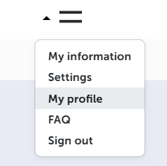
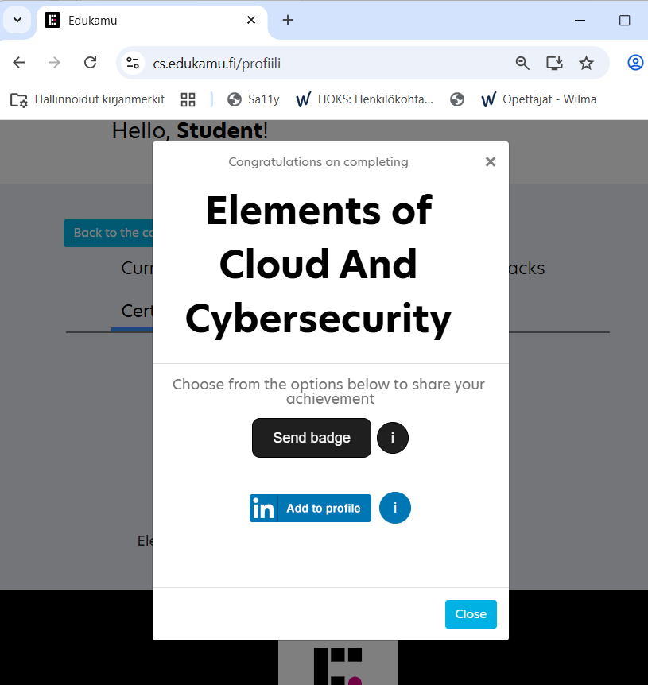
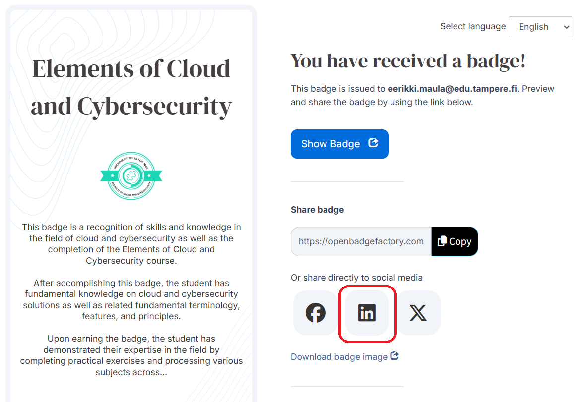

Kun saat opintojakson suoritettua valitse Oma profiili ja lisää badge suorituksestasi omalle
LinkedIn-profiilillesi.
- Avaa profiili

- Valitse Send badge, saat hetken kuluttua sähköpostin.

- Avaa linkki Get your badge here!

Ethical Hacker
Ethical Hacker, kutsulinkki opettajalta. Tehdään vain nämä osiot:
-
6.1. Overview of Web Application-Based Attacks for Security
Professionals and the OWASP Top 10 (EI labs)
-
6.4 Understanding Injection-Based Vulnerabilities (WebGoat
harjoitukset, DVWA labra)
- 6.5. Exploiting Authentication-Based Vulnerabilities
- 6.6. Exploiting Authorization-Based Vulnerabilities
-
6.7. Understanding Cross-Site Scripting (XSS) Vulnerabilities
(WebGoat harjoitukset, DVWA labra)
-
6.8. Understanding Cross-Site Request Forgery (CSRF/XSRF) and
Server-Side Request Forgery Attacks
-
6.12. Exploiting Insecure Code Practices Lisätehtävä: Final
Capstone Activity
Kun saat vaaditun osion tehtyä näytä suoritus opettajallesi.